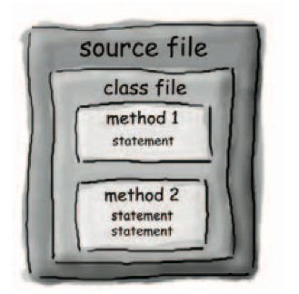
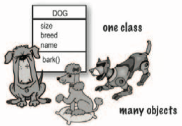
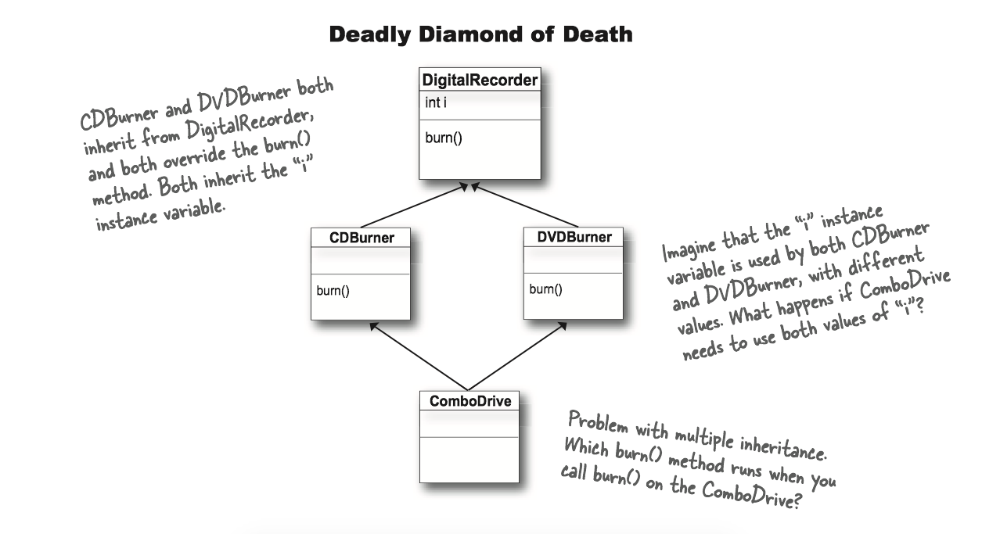

CSAPP - 网络编程
1 客户端-服务器编程模型
每个网络应用都是基于客户端-服务器模型的。
客户端-服务器模型中的基本操作是事务(transaction)。一个客户端-服务器事务由以下四步组成：
- 当一个客户端需要服务时，它向服务器发送一个请求，发起一个事务。
- 服务器收到请求后，解释它，并以适当的方式操作它的资源。
- 服务器给客户端发送一个响应，并等待下一个请求。
- 客户端收到响应并处理它。

客户端和服务器是进程，而不是常提到的机器或者主机。
- 一台主机可以同时运行许多不同的客户端和服务器
- 一个客户端和服务器的事务可以在同一台或是不同的主机上。
2 网络
对主机而言，网络只是又一种I/O设备，是数据源和数据接收方。物理上而言，网络是一个按照地理远近组成的层次系统。
2.1 网络层次系统
(1) 最底层：以太网段
局域网(LAN, Local Area Network)的范围一般限制在一个建筑或者校园内。最流行的局域网技术是以太网(Ethernet)，由电缆和集线器(hub)组成一个以太网段。

(2) 桥接以太网
桥接以太网(bridged Ethernet)是将以太网段用电缆和网桥(bridge)连接成的较大的局域网。

(3) 互联网络
多个不兼容的局域网可以通过路由器(routers)连接成互联网络(internets)。

2.2 网络协议
互联网络是由各种局域网和广域网组成，它们采用完全不同且不兼容的技术。那么如何能让某台主机跨过所有不兼容的网络发送数据位到另一台目的主机呢？
解决方法：一层运行在每台主机和路由器上的协议软件，它消除了不同网络之间的差异。协议提供了两种基本能力：
- 提供了命名机制
- 定义一致的主机地址(host adress)格式
- 每台主机会被分配至少一个互联网络地址(internet address)，地址唯一地标识了主机
提供了传送机制
- 定义了统一的基本传送单位-包(packet)
- 包由包头(header)和有效载荷(payload)组成
- 包头包括包的大小以及源主机和目的主机的地址
- 有效载荷包括从源主机发出的数据位

PH: Internet packet header, 互联网络包头
FH: LAN frame header, 局域网帧头
3 全球IP因特网
全球IP因特网(Global IP Internet)是最著名和最成功的互联网络(internet)实现。每台因特网主机都运行实现TCP/IP协议的软件，使用套接字接口(sockets interface)函数和Unix I/O函数来通信。

从程序员的角度：
- 主机被映射为一组32位的IP地址(IP addresses)
- 128.2.203.179
- IP地址被映射为一组标识符，叫做域名(domain name)
- 因特网主机上的进程能够通过连接和任何其他因特网主机上的进程通信。
3.1 IP地址
32位IP地址存在一个IP地址结构(in_addr)中
- IP地址在内存中是以网络字节顺序(network byte order, 大端法)存放的
/* Internet address structure */
struct in_addr {
uint32_t s_addr; /* network byte order (big-endian) */
};
3.2 域名
域名(domain names)是一串用句点分隔的单词(字母、数字和破折号)。域名集合形成了一个层次结构，可以表示为一棵树。

域名系统(Domain Naming System, DNS)是映射IP地址和域名的数据库。可以把DNS数据库视为上百万的主机条目结构(host entry structure)的集合，其中每条定义了一组域名和一组IP地址之间的映射。
- DNS映射，可以通过
nsloopup查看 - 在最简单的情况中，一个域名和一个IP地址之间是一一映射
nslookup whaleshark.ics.cs.cmu.edu-Address: 128.2.210.175
- 然而，在某些情况下，多个域名可以映射为同一个IP地址
nslookup cs.mit.edu/ nslookup eecs.mit.edu-Address: 18.62.1.6
- 在最通常的情况下，多个域名可以映射到同一组的多个IP地址
nslookup www.twitter.com-Address: 199.16.156.6,Address:199.16.156.70
3.3 因特网连接
客户端和服务器通过连接(connections)发送字节流来通信，每一个连接都有如下特点：
- 点对点(point-to-point)：连接一对进程
- 全双工(full-duplex)：数据可以同时在两个方向传送
- 可靠性(reliable)：发送和接收的字节流顺序相同
套接字(sockets)是连接的端点，套接字地址用 “地址：端口”来表示。
- 端口(port)是一个16位整数，标识了一个进程。
- 临时端口：当可会淡发起连接请求时，内核自动分配的端口
- 知名端口：和服务器提供的服务有短的端口 (
- Web服务器使用端口80
- ssh服务器使用端口22
- email服务器使用端口25
一个连接是由它两端的套接字地址唯一确定的（套接字对, socket pair）。

使用端口来识别服务

4 套接字接口
什么是套接字？
- 对于内核来说，套接字是通信的端点。 To the kernel, a socket is an endpoint of communication
- 对于应用来说，套接字是让应用从网络读写的文件描述符。 To an application, a socket is a file descriptor that lets the application read/write from/to the network.
客户端和服务器通过对套接字描述符读写进行通信：

(1) 通用套接字地址(generic socket address)：
- 以套接字地址作为
connect(),bind(),accept的实参 - 仅仅因为那时的C不存在
void *指针，所以套接字接口被设计成这样。
struct sockaddr {
uint16_t sa_family; /* Protocol family */
char sa_data[14]; }; /* Address data. */
(2) 因特网的套接字地址
- 必须将
struct sockaddr_in *转换为struct sockaddr *才能以套接字地址作为函数实参
struct sockaddr_in {
uint16_t sin_family;
uint16_t sin_port;
struct in_addr sin_addr;
unsigned char sin_zero[8];
};

- 开启服务器(start server)
getaddrinfo: 把主机名(hostname）、主机地址(host addresses)、端口(ports)和服务名(service names)转换为套接字地址结构。socket: 创建一个套接字描述符(socket descriptor)，也就是之后用来读写的 file descriptorbind: 请求内核把套接字地址和套接字描述符绑定listen: 将套接字描述符从一个主动套接字转换为监听套接字(listening socket)，该套接字可以接受来自客户端的连接请求accept: 等待来自客户端的连接请求
- 开启客户端(start client)
getaddrinfo,socket与开启服务器相同connect: 试图与服务器建立连接
4.1 Echo客户端和服务器示例
在和服务器建立连接之后，客户端进入一个循环，反复从标准输入读取文本行，发送文本行给服务器，从服务器读取回送的行，并输出结果到接准输出。
#include "csapp.h"
int main (int argc, char **argv) {
int clientfd;
char *host, *port, buf[MAXLINE];
rio_t rio;
host = argv[1];
port = argv[2];
//和服务器建立连接
clientfd = Open_clientfd(host, port);
Rio_readinitb(&rio, clientfd);
while (Fgets(buf, MAXLINE, stdin) != NULL) {
// 写入，也就是向服务器发送信息
Rio_writen(clientfd, buf, strlen(buf));
// 读取，也就是从服务器接收信息
Rio_readlineb(&rio, buf, MAXLINE);
// 把从服务器接收的信息显示在输出中
Fputs(buf, stdout);
}
Close(clientfd);
exit(0);
}
服务器在打开监听描述符后，进入一个无限循环。每次循环都等待一个来自客户端的连接请求，输出已连接客户端的域名和IP地址，并调用echo函数为这些客户端服务。在echo程序返回后，主程序关闭已连接描述符。
#include "csapp.h"
void echo(int connfd);
int main(int argc, char **argv){
int listenfd, connfd;
socklen_t clientlen;
struct sockaddr_storage clientaddr; // Enough room for any addr
char client_hostname[MAXLINE], client_port[MAXLINE];
// 开启监听端口，注意只开这么一次
listenfd = Open_listenfd(argv[1]);
while (1) {
// 需要具体的大小
clientlen = sizeof(struct sockaddr_storage); // Important!
// 等待连接
connfd = Accept(listenfd, (SA *)&clientaddr, &clientlen);
// 获取客户端相关信息
Getnameinfo((SA *) &clientaddr, clientlen, client_hostname,
MAXLINE, client_port, MAXLINE, 0);
printf("Connected to (%s, %s)\n", client_hostname, client_port);
// 服务器具体完成的工作
echo(coonfd);
Close(connfd);
}
exit(0);
}
void echo(int connfd) {
size_t n;
char buf[MAXLINE];
rio_t rio;
// 读取从客户端传输过来的数据
Rio_readinitb(&rio, connfd);
while((n = Rio_readlineb(&rio, buf, MAXLINE)) != 0) {
printf("server received %d bytes\n", (int)n);
// 把从 client 接收到的信息再写回去
Rio_writen(connfd, buf, n);
}
}
5 Web服务器
5.1 Web基础
Web客户端和服务器之间的交互用的是HTTP协议(超文本传输协议)，交互的基本过程为：
- 客户端和服务器建立TCP连接
- 客户端请求内容
- 服务器响应请求的内容
- 服务器和客户端最终关闭 连接

5.2 Web内容
Web服务器返回内容给客户端，内容是与一个MIME类型相关的字节序列。(MIME - Multipurpose Internet Mail Extensions)
HTTP响应返回的类型可以是静态的，也可以是动态的：
- 静态内容：内容存储在文件中，响应HTTP请求后返回给客户端
- 例如HTML文件，图片，声音
- 动态内容：运行一个可执行文件产生输出，返回给客户端
5.3 HTTP事务
一个HTTP请求(request)是一个请求行(request line)，后面跟随着零个或多个请求报头(request header)，再跟随一个终止报头的空行。
请求行的格式是<method> <uri> <version>。
<method>可以是GET, POST, OPTIONS, HEAD, PUT, DELETE, TRAXE<uri>是响应的URL的后缀，包括文件名和可选的参数<version>是该请求遵循的HTTP的版本(HTTP/1.0或者HTTP/1.1)
请求报头的格式是<header name>:<header data>
- 为服务器提供额外信息，例如浏览器的商标名
HTTP响应与HTTP请求类似，是一个响应行(response line)，后面跟着零个或者多个响应报头(response header)，再跟随一个终止报头的空行，再跟随一个响应主体(response body)。
响应行的格式是<version> <status code> <status message>
<version>是响应所遵循的HTTP版本<status-code>是一个3位的正整数，指明对请求的处理<status-message>英文描述
响应报头的格式是<header name>:<header data>
下面是HTTP请求的一个实例

Hadoop和MapReduce入门
来自Udacity课程Introduction to Hadoop and Mapreduce的笔记
Part I Big Data
2 data source
data increases
- phone data
- online store
how to store and process large amounts of data?
3. big data
what is big data?
- order details for a store
- all orders across 100s of stores
- a person's stock portfoio
- all stock transaction for the new york
4. big data solution
big data:
- all orders across 100s of stores
- all stock transaction for the new york
5. Definition of Big Data
big data is data that is too big to process on a single machine
6 challenges
- most data is worthless. false
- data is created fast. true
- data from different sources in various formats. true
8 the 3vs
- volumes: size of data
- reliable storage: find a cheaper way
- variety: data coming from different source and format
- velocity: speed of data generation
9 data worth storing?
- transactions
- logs
- business
- user
- sensor
- medical
- social
all
11 variety
data variety. for a long time, people use sql, mysql, oracle to store their data. the problem is that data needs to be fit in pre-defined tables. and a lot of data we deal these days tend to be unstructured or semi-structured data
15 velocity
TB/day
16 Doug intro
hadoop 之父 doug cutting
Here are the papers Google published about their distributed file system (GFS) and their processing framework, MapReduce
.
17. core hadoop
store in hdfs, process with mapreduce
18. hadoop ecosystem

Part 2 HDFS and MapReduce
Part 3 MapReduce Code
Part 4 MapReduce Design Patterns
Head first Java
Notes, Head first Java, 2nd Edition
- 1 Dive in A Quick Dip
- 2 Classes and objects
- 3 Primitives and references
- 3.1 primitive variable
- 3.2 Reference variable
- 3.3 Array
- 4 Methods use instance variables
- 5 Writing a Program
- 6 Get to know the Java API
- 7 Inheritance and polymorphism
- 8 Interfaces and abstract classes
- 9 Constructors and garbage collection
- 10 Numbers and statics
1 Dive in A Quick Dip
Java has friendly syntax, object-oriented features, memory management, and best of all - the promise of probability (write-one/run-anywhere).
You type a source code file(.java). compile it using the javac compiler, then run(java) the compiled bytecode(.class) on a java virtual machine.

Every Java application has to have at least one class, and at least one main method.
The main method public static void main(String[] args){//your code goes here}is where your program starts running.
Java has three standard looping constructs: while, do-while, and for.
A boolean and an integer are not compatible types in Java.
int x=1;
while (x) {} //wrong
System.out.println inserts a newline, System.out.print keeps printing to the same line.
2 Classes and objects
2.1 Object Oriented
What do you like about OO? Some people say...
- It helps me design in a more natural way. Things have a way of evolving.
- Not messing around with the code I've already tested, just to add a new feature.
- Reusing code in other applications. When I write a new class, I can make it flexible enough to be used in something new, later
2.2 Class
A class describes what an object knows(instance variables) and what an object does(methods).

What's the difference between a class and an object?
- A class is not an object. A class is the blueprint for an object. It tells the JVM how to make an object of that particular type. Each object made from that class have its own values for the instance variables of that class.

2.3 main
The two uses of main:
- to test your real class
- to launch/start your Java application.
3 Primitives and references
Variables must always be declared with a name and a type. Variables come in two flavors: primitive and reference.(变量的生命必须有类型和名称。变量有两种：primitive和引用)
3.1 primitive variable
A primitive variable value is the bits representing the value. primitive变量的值是表示该值的位。
3.2 Reference variable
- A reference variable value is the bits representing a way to get to an object on the heap.引用变量的值是表示一种到达堆上的对象的方法的位。
- A reference variable is like a remote control. Using the dot operator(
.) on a reference variable is like pressing a button on the remote control to access a method or instance variables. - A reference variable has a value of
nullwhen it is not referencing any object.
3.3 Array
- An array is always an object, even if the array is declared to hold primitives.
- Every element in an array is just a variable.
The three steps of object declaration, creation and assignment.
(e.g. Dog myDog = new Dog());
- declare a reference variable: tell the JVM to allocate space for a reference variable, and names that variable myDog
- create an object: tells the JCM to allocate space for a new Dog object on the heap.
- Assigns the object to the reference variable.

4 Methods use instance variables
4.1 Methods
Class define what an object knows and what an object does. Things an object knows are its instance variables(state), things an object does are its methods(behavior).
Methods:
A method uses parameters. A caller passes arguments.
- Arguments are the things you pass into the methods.
- If a method takes a parameters, you must pass it something.
- Methods can return values. Every method is declared is declared with a return type.
- If you declare a method to return a value, you must return a value of the declared type or a value that is compatible with the declared type.
- Java is pass-by-value, which means pass-by-copy.
4.2 Getters and setters
Getters and setters let you, well, get and set things.
- A Getter's sole purpose in life is to send back, as a return value, the value of whatever it is that particular Getter is supposed to be Getting.
4.3 Encapsulation
By forcing everybody to call a setter method, we can protect variables from unacceptable changes.
theCat.height = 0 //yikes! we can't let this happen
public void setHeight(int ht){
if (ht>9){ // we put in checks to guarantee a minimum cat height.
height=ht;
}
}
An encapsulation starter rule of thumb: mark your instances variables private, and provide public getters and setters for access control.
- Encapsulations puts a force-field around instance variables, so nobody can set them to something inappropriate.
- The point to setters (and getters, too) is that you can change your mind later, without breaking anybody else’s code!
class GoodDog {
private int size; //Make the instance variable private
public int getSize() { // make the getter methods public
return size;
}
public void setSize(int s) { // make the setter methods public
size = s;
}
// even though the methods don't really add new functionality,
// the cool thing is that you can change your mind later.
// you can come back and make a method safer, faster, better
void bark() {
if (size > 60) {
System.out.println(“Wooof! Wooof!”);
} else if (size > 14) {
System.out.println(“Ruff! Ruff!”); }
else {
System.out.println(“Yip! Yip!”);
}
}
}
4.4 Instance variables
You don't have to initialize instance variables, because they always have a default value:
- intergers: 0
- floating points: 0.0
- booleans: false
- references: null
4.5 Instance and local variables
The difference between instance and local variables:
- Instance variables are declared inside a class but not within a method.
- Local variables are declares within a method .
- Local variables must be initialized before use.
4.6 Comparing variables
If you want to know if two objects are equal, you need the .equal() method.
- whether two different objects should be treated as equal depends on what makes sense for that particular object type. (e.g. dog/string)
String S = "baby";
S.equal(another_string);
To see if two reference are the same (which means they refer to the same object on the heap) use the == operator.
Foo a = new Foo();
Foo b = new Foo();
Foo c = a;
if (a == b) { // false }
if (a == c) { // true }
if (b == c) { // false }
To compare two primitives, use the == operator.
- Operator
==doesn't care about the size of the variable, so all the extra zeros on the left end don't matter.
int a = 3;
byte b = 3;
if (a==b){ //true}
5 Writing a Program
- prep code: a form of pseudocode, to help you focus on the logic without stressing about syntax. 一种伪代码
- test code: a class or methods that will test the real code and validate that it's doing the right thing. 测试代码
- real code: the actual implementation of the class. 真实代码
Extreme Programming（极限编程):
- Write the test code first
- Make small, but frequent, releases
- Develop in iteration cycles.
6 Get to know the Java API
ArrayList is a class in the core Java library (the API).
-
boolean add(Object elem): Adds the objects parameter to the list(returntrue). -
boolean remove(int index): Removes the object at the index parameter. Returnstrueif the element was in the list. -
boolean remove(Object elem): Removes this object(if it's in the ArrayList). -
boolean contains(Object elem): Returnstrueif there's a match for the object parameter. -
boolean isEmpty(): Returnstrueif the list has no elements -
int indexOf(Object elem): Returns either the index of the object parameter, or -1 -
size(): Return the number of elements currently in the list. -
Object get(int index): Return the object currently at the index parameter.
You have to know the full name of the class you want to use in your code. You have two options:
- Import: put an import statement at the top of your source code file:
import java.util.ArrayList
- Type: type the full name everywhere in your code. Each time you use it.
java.util.ArrayList<Dog> list = new java.util.ArrayList<Dog>();
7 Inheritance and polymorphism
7.1 overriding
Overriding（重写) just means that a subclass redefines one of its inherited methods when it needs to change or extend the behavior of that method.
When one class inherits from another, the subclass inherits from the superclass. In Java, we say that the subclass extends the superclass.子类继承自父类。
Instance variables are not overridden because they don't need to be. They don't define any special behavior, so a subclass can give an inherited instance variable any value it chooses.实例变量无法被覆盖掉是因为不需要，它们并没有定义特殊的行为。
When you want to know if one thing should extend another, apply the IS-A test.若你想要知道某物是否应该要继承另一物时，则可以用IS-A(是一个)测试来检验。
If class B extends class A, class B IS-A class A. 如果类B继承类A，那么类B是一个类A。
if your subclass overriding method, you can call the superclass version using the keyword super.
// this calls the inherited version on roam(),
// then comes back to do your own subclass-specific code
public void roam(){
super.roam();
//my own roam stuff
}
There are four access levels, moving from most restrictive to least, the four access levels are: 四种权限，左边是最受限制的，而越往右边限制程度越小：
prive, default, protected, public
- public members are inherited. public类型的成员会被继承
- private members are not inherited. private类型的成员不会被继承
Inheritances lets you guarantee that all classes grouped under a certain supertype have all the methods that the supertype has. In other words, you define a common protocol for a set of classes related through inheritance. 继承让你可以确保某个父类型之下的所有类都会有父类型所持有的全部方法。也就是说，你会通过继承来定义相关类间的共同协议。
when you define a supertype for a group of classes, any subclass of that supertype can be substituted where the supertype is expected.
当你定义出一组类的父型时，你可以用子型的任何类来填补任何需要或期待父型的位置。
7.2 Polymorphism
With polymorphism, the reference type can be a superclass of the actual object type. 运用多态时，引用类型可以是实际对象类型的父类。
Animal[] animals = new Animal[3];
animals [0] = new Dog();
animals [1] = new Cat();
animals [2] = new Lion();
for (int i=0; i< animals.length; i++) {
animals[i].eat();
animals[i].roam();
}
You can have polymorphic arguments and return types. 参数和返回类型也可以多态。
class Vet {
public void giveShot(Animal a) {
// do horrible things to the Animal at
// the other end of the ‘a’ parameter
a.makeNoise();
}
}
class PetOwner {
public void start() {
Vet v = new Vet();
Dog d = new Dog();
Hippo h = new Hippo();
v.giveShot(d);
v.giveShot(h);
}
If I write my code using polymorphic arguments, where I declare the method parameter as a superclass type, I can pass in any subclass object at runtime. 如果我将程序代码编写使用多态参数，也就是说将参数声明为父类类型，我就可以在运行时传入任何的子类对象。
With polymorphism, you can write code that doesn't have to change when you introduce new subclass types into the program. 通过多态，你就可以编写出引进新型子类时也不必修改的程序。
There are three things that can prevent a class from being subclassed.
- A class can be non-public (if you don't declare the class as public. A non-public class can be subclassed only by classes in the same package as the class. 类可以是非公有的，非公有的类只能被同一个包的类作出子类。
- Using keyword modifier
finalto stop a class from being subclassed. 使用final修饰符阻止类被继承。 - If a class has only
privateconstructors, it can't be subclassed. 如果类只拥有private的构造程序，它不能被继承。
If you want to protect a specific method from being overridden, mark the method with the final modifier. 如果你想要防止特定的方法被覆盖，可以将该方法标识成final表示没有任何的方法可以被覆盖。
Rules for overriding:
- Arguments must be the same, and return types must be compatible. 参数必须要一样，且返回类型必须要兼容
- The method can't be less accessible. 不能降低方法的访问权限
7.3 Method overloading
Method overloading(方法重载) is nothing more than having two methods with the same name but different argument lists. 方法重载就是方法名称相同，但参数列表不同。
- Purpose: overloading lets you make multiple versions of a method, with different argument lists, for convenience to the callers. 重载可以有同一方法的多个不同参数列表的版本，方便了调用者。
- The return types can be different 返回类型可以不同
- You can't change only the return type 不能只改变返回类型
- You can vary the access levels in any direction 可以更改访问权限
8 Interfaces and abstract classes
What's an interface? it's a 100% abstract class.
What's an abstract class? it's a class that can't be instantiated.
Abstract classes
Here's where it gets weird:
Animal anim = new Animal();
There two are the same type, but what the heck does an Animal object look like?
Some classes just should not be instantiated!
How? By marking the class as abstract, the compiler will stop any code, anywhere, from ever creating an instance of that type. i.e. prevent a class from ever being instantiated.
Making a class abstract before the class declaration:
abstract class Caine extends Animal {
public void roam() {}
}
When you're designing your class inheritance structure, you have to decide which classes are abstract and which are concrete.
- Concrete classes are those that are specific enough to be instantiated.
- A concrete class just means that it's OK to make objects of that type.
- An abstract class has virtually no use, no value, no purpose in life, unless it is extended.
Abstract methods
An abstract method means the method must be overriden, whereas an abstract class means the class must be extended.
- there isn't any code that would make sense in the abstract method, you won't put in a method body. e.g.
public abstract void eat(). - If you declare an abstract method, you must mark the class abstract as well. You can't have an abstract method in a non-abstract class.
- You must implement all abstract methods.
the ultimate superclass: Object
Every class in Java extends class Object. Class Object is the mother of all classes; it's the superclass of everything. Java中的每个类都是从Object这个类继承出来的。Object类是所有类的妈妈，他是所有类的父类。
- Any class that doesn't explicitly extend another class, implicitly extends Object.
Methods of Object class:
equals(): tell you if two objects are considered equal.getClass(): Gives you back the class that object was instantiated from.hashCode(): Prints out a hashcode for the objecttoString(): Prints out a String message with the name of the class and some other number we rarely care about.
Object is a non-abstract class because it's got method implementation code that all classes can inherit and use out-of-box, without having to override the methods.
The Object class serves two main purpose:
- to act as a polymorphic type for methods that need to work on any class that you or anyone else makes 作为方法的多态类型
- to provide real method code that all objects in Java need at runtime (and putting them in class Object means all other classes inherit them).提供Java在执行期堆任何对象都有需要的实现方法代码。
Using polymorphic references of type Object has a price
When you put an object into an ArrayList<Dog>, it goes in as a Dog, and coms out as a Dog:
// Make an ArrayList declared to hold Dog objects.
ArrayList<Dog> myDogArrayList = new ArrayList<Dog>();
// Make a Dog
Dog aDog = new Dog();
// Add the Dog to the list
myDogArrayList.add(aDog);
//Assign the Dog from the list to a new Dog reference variable
Dog d = myDogArrayList.get(0);
Everything comes out of an ArrayList<Object> as a reference of type Object, regardless of what the actual object is. 任何从ArrayList<Object>取出的东西都会被当作Object类型的引用，而不管它原来是什么。
// make an ArrayList declared to hold any type of Object
ArrayList<Object> myDogArrayList = new ArrayList<object>()
// make a Dog
Dog aDog = new Dog();
// Add the Dog to the list
myDogArrayList.add(aDog);
// No!! Won't compile!! the get() method returns type Object.
// The compiler knows only that the object inherits from Object,
// but it doesn't know it's a Dog!!
Dog d = myDogArrayList.get(0)
The compiler decides whether you can call a method based on the reference type, not the actual object type.:
Object o = al.get(index);
// Class Object has a hashCode() method
// so you can call that method on any object in Java
int i = o.hashCode();
// Can't do this!! the Object class has no idea what it means to bark().
o.bark();

If you're sure the object is really a Dog, you can make a new Dog reference to it by copying the Object reference, and forcing that copy to go into a Dog reference variable, using a cast (Dog).
Object o = al.get(index);
// cast the Object back to a Dog we know is there.
Dog d = (Dog) o;
d.roam();
If you're not sure it's a Dog, you can use the instanceof operator to check.
if (o instanceof Dog) {
Dog d = (Dog) o;
}
Interface
Questions: what if you want to add Dog some Pet behaviors?
Option one: We take the easy path, and put pet method in class Animal.
- Pros: All the Animals will instantly inherit the pet behaviors. We won't have to touch the existing Animal subclasses at all.
- Cons: Some animals like lion, wolf are not a pet. Non-pet Animals running around with pet methods.
Option two: We start with option one, putting the pet methods in class Animal, but we make the methods abstract.
- Pros: All classes must override the methods, but they can make the methods "do-nothings".
- Cons: Waste a lot of time to implement every concrete Animal subclasses.
Options three: Put the pet methods Only in the classes where they belong.
- Pros: The methods are where they belong, and only where they belong.
- Cons: Firstly, you'd have to agree to a protocol, and all programmers of pet Animal classes now and in the future would have to know about the protocol. Secondly, you don't get to use polymorphism for the pet methods
It looks like we need two superclasses at the top.

It’s called "multiple inheritance"(多重继承) and it can be a Really Bad Thing. Because multiple inheritance has a problem known as The Deadly Diamond of Death(致命的死亡砖石)

Java的方案: Interface!!!
- A Java interface(接口) solves multiple inheritance problem by giving you much of the polymorphic benefits of multiple inheritance without the pain and suffering from the Deadly Diamond of Death.
How?
- surprisingly simple: make all the methods abstract
- A Java interface is like a 100% pure abstract class.
To define an interface:
//use the keyword "interface" instead of "class"
public interface Pet {}
To implement an interface:
// Use the keyword "implements" followed by the interface name.
public class Dog extends Canine implements Pet {}
A class can implement multiple interfaces!
public class Dog extends Animal implements Pet, Saveable, Paintable {}
Classes from different inheritance trees can implement the same interface.

How do you know whether to make a class, subclass, an abstract class, or an interface?
- Make a class that doesn’t extend anything (other than Object) when your new class doesn’t pass the IS-A test for any other type.
- Make a subclass (in other words, extend a class) only when you need to make a more specific version of a class and need to override or add new behaviors.
- Use an abstract class when you want to define a template for a group of subclasses, and you have at least some implementation code that all subclasses could use. Make the class abstract when you want to guarantee that nobody can make objects of that type.
- Use an interface when you want to define a role that other classes can play, regardless of where those classes are in the inheritance tree.
Using super
What if you don't want to replace the method with an override in a concrete subclass, but you just want to add to it with some additional specific code?
abstract class Report {
void runReport() {
// set-up report
}
void printReport() {
// generic printing
}
}
class BuzzwordsReport extends Report {
void runReport() {
// call superclass version, then come back and do some
// subclass-specific stuff
super.runReport();
buzzwordCompliance();
printReport();
}
void buzzwordCompliance() {...}
}

9 Constructors and garbage collection
10 Numbers and statics

Copyright © 2015 Powered by MWeb, Theme used GitHub CSS.